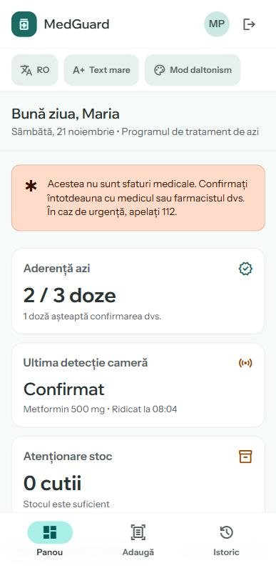
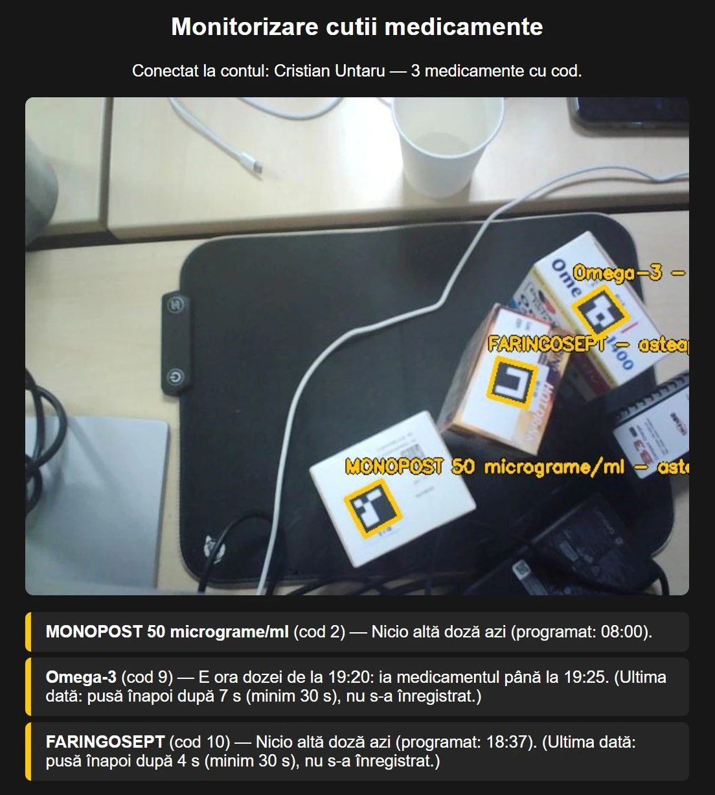
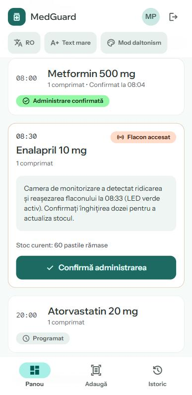
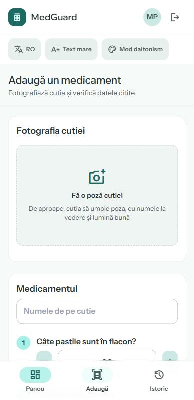
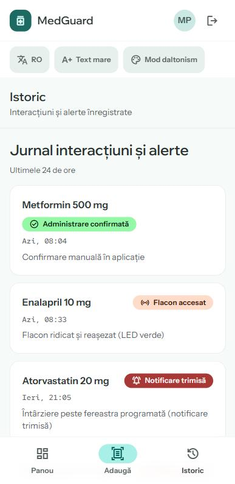
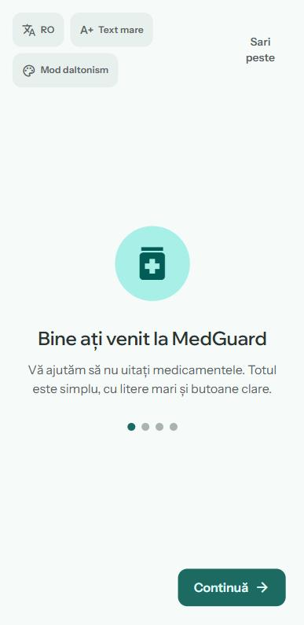
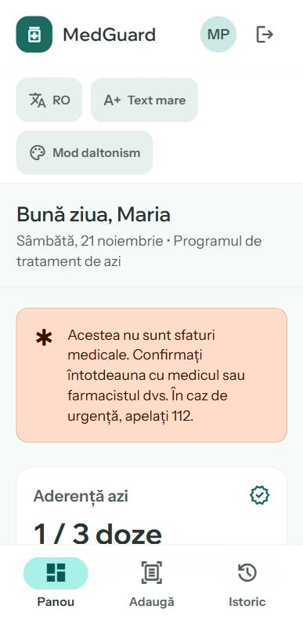

MedGuard
A medication companion that notices a missed dose, before a family has to ask.

Many pills, one person, no one watching.
of elderly patients don’t fully follow chronic treatment
of Europeans 65+ take 5 or more medicines a day
older people in Romania live alone
adherence drops from 1 dose a day to 4 doses a day
People accept help. Not being filmed.
= our vial marker
of caregivers are interested in monitoring tech, but only 10% actually use a tool: it has to be easy.
91% of Romanians 55+ already use a smartphone, so a phone app is the natural fit.
Scan the box. Mark the vial. Alert the family.
Photograph the box
On-phone OCR reads the name; matched to the ANM list of authorized medicines.
Marker on the vial
Raspberry Pi + OpenCV spot an ArUco tag when the vial is lifted.
Instant feedback
green: on time
red + buzzer: late
Family is told
A Telegram alert goes to a trusted contact if the window passes.
The camera finds the marker. The app knows the box.
Every box on the desk is read at once — no manual check-in needed.
Dose window open at 19:20; put back after only 7s, under the 30s minimum, so it didn't register.
No dose due yet today — next scheduled times shown directly on the overlay.

Real screens from our running build.



Built for elderly users, already in the app.
In the app today

